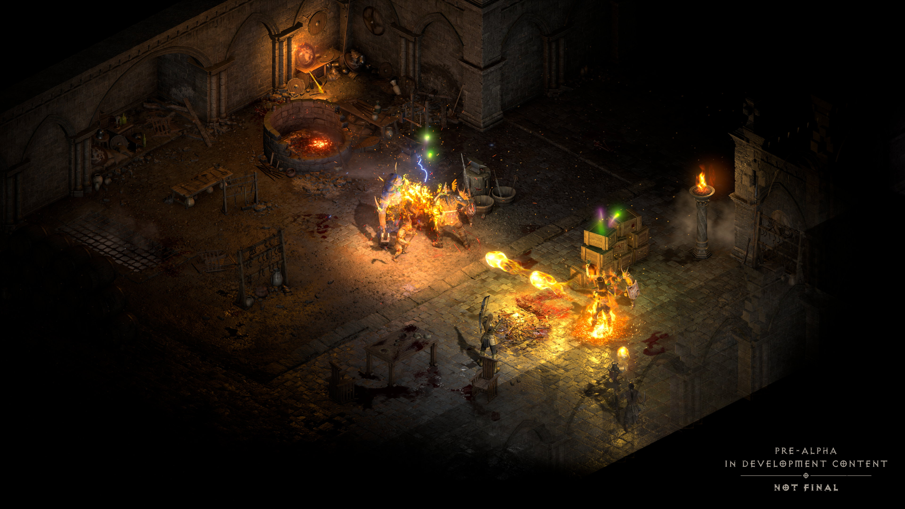
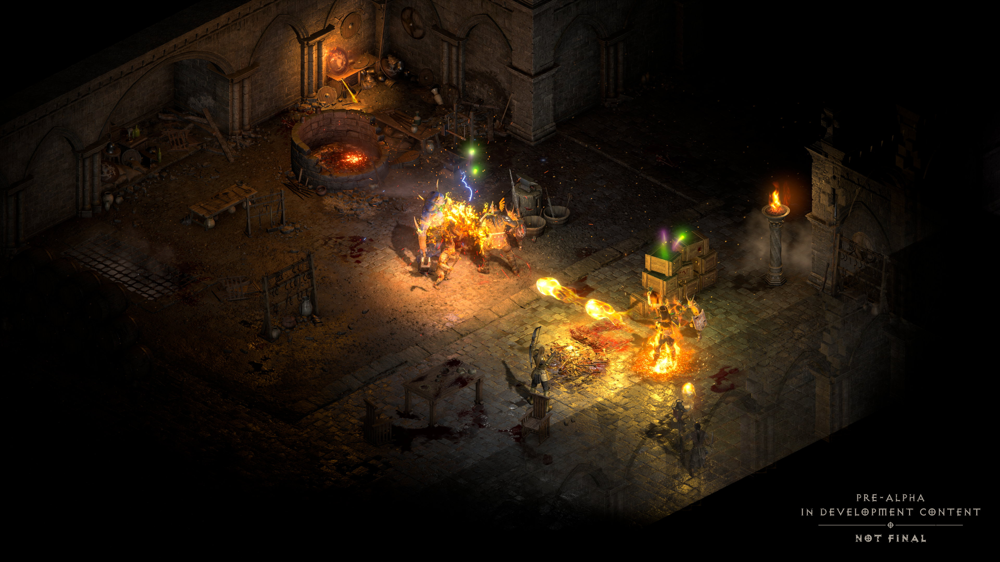
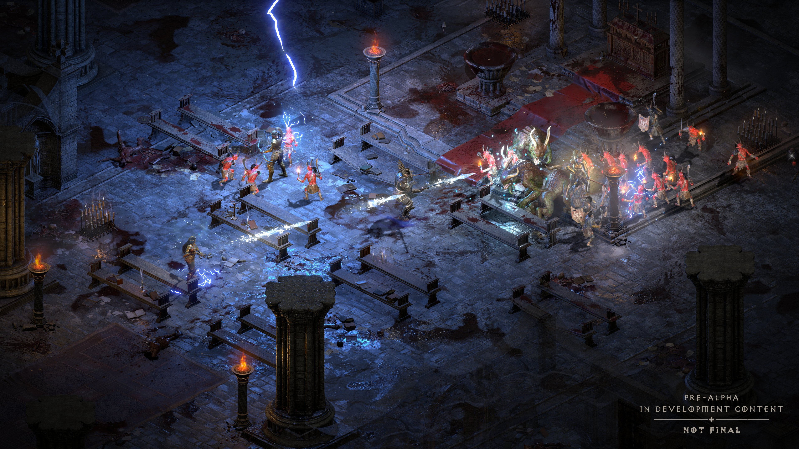
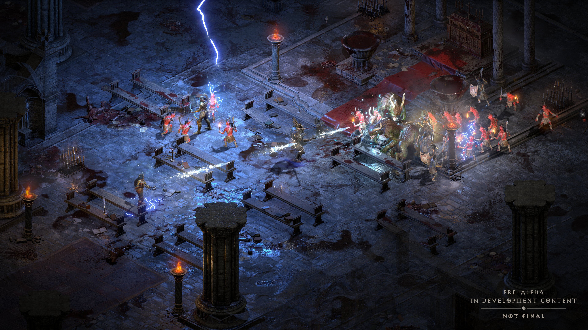

Добро пожаловать в гайд по Runewords в Diablo II Resurrected
Что такое рунические слова?
- Нагрудная броня
- Головной доспех
- Оружие
- Щиты
Правила рунических слов
Получение снаряжения с гнездами
Добавление сокетов
| Добавить сокеты в | Рецепт хорадрического куба |
|---|---|
| Нагрудная броня | Рецепт хорадрического куба |
| Головной доспех | Рецепт хорадрического куба |
| Щит | Рецепт хорадрического куба |
| Оружие | Рецепт хорадрического куба |
Classes


Barbarian

Assassin

Amazon
Featured Content
Featured Video
Featured Images


 

 
